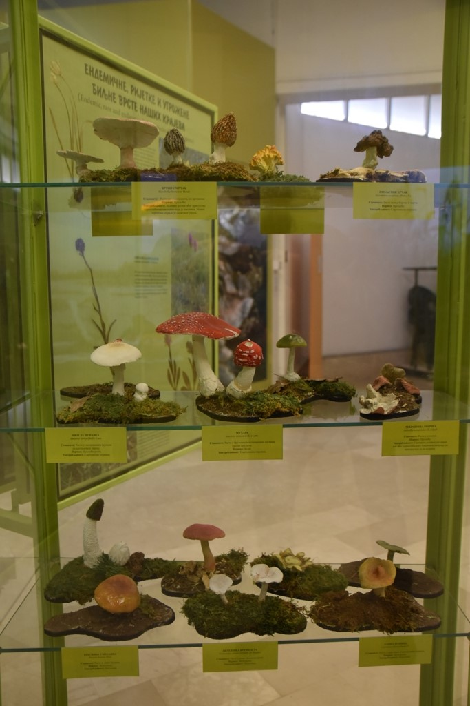

Ботаника
Ботаничка поставка приказује „Љековито и јестиво биље наших крајева“ и „Ендемичне, ријетке и угрожене биљке наших крајева“. Хербаризованим примјерцима, колоритним фотографијама и пратећим текстом презентоване су 72 биљне врсте, од чега су 24 врсте ендемичне, ријетке и угрожене биљке, а 48 врста љековито и јестиво биље. Миколошка поставка садржи 52 врсте гљива од којих су 34 врсте јестиве, 2 врсте условно јестиве, 8 нејестивих и 8 врста које припадају групи отровних гљива.
- 
-

-